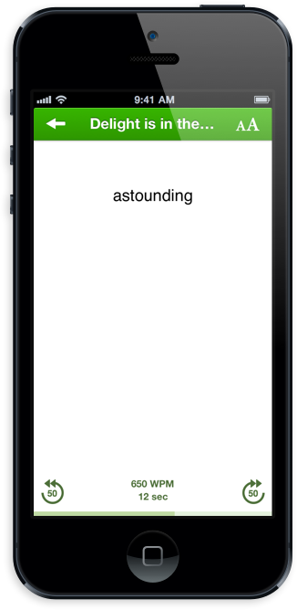

BLURR
for iPhoneAn amazing speed reader to help you devour the articles you've been meaning to read, and to help you learn to read so much faster in the process.
An amazing speed reader to help you devour the articles you've been meaning to read, and to help you learn to read so much faster in the process.
Blurr is built to make it really simple to learn to read faster. One of the most common reasons people read slow is due to something called subvocalization — when reading you say the words to yourself, which limits how fast you can read to a speed similar to how fast you can talk. Blurr helps to reduce this subvocalization by pacing through the reading at a rate you define, only showing one word at a time.
Once you get up to a faster speed, you can also use chunks, or how many words to show at once. Learning to read in chunks allows you to read even quicker.
Blurr supports Pocket and Instapaper integration, allowing you to import all your articles you've been meaning to read and zoom through them.
You can also import URLs (detected automatically), or bodies of text.
Change the font, font size, or even toggle to a "night mode" for when it's dark out and you'd like the screen to be kinder on your eyes.
Blurr offers very precise changing of your reading speed, allowing you to read at a very slow pace as you're learning, to lightning fast speeds as you progress. The amount of words shown on screen (or chunk size) is also customizable to up to five words.